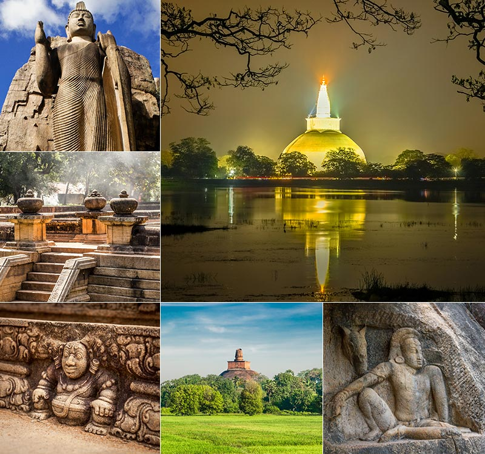
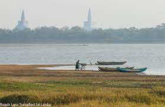
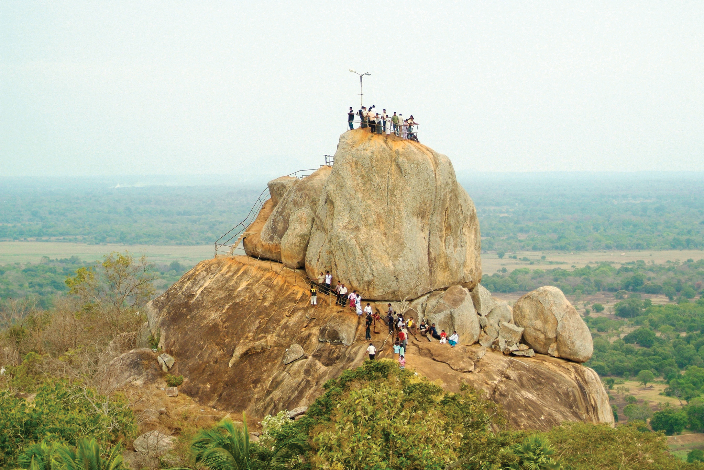
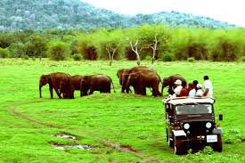

Anuradhapura is the first capital of Sri Lanka located in north central province of Sri Lanka. It is one of the ancient capitals of Sri Lanka which was the center of Theravada Buddhism for many centuries. Due to its ruins of an ancient Sri Lankan civilization UNESCO named it as a UNESCO world heritage site in 1982 under the name of Sacred City of Anuradhapura.
Anuradhapura

According to legend, the site for the stupa was chosen by the king after he found a rock inscription by Arahath Mahinda, which stated that it was the place where in time to come a great king would establish a beautiful stupa to enshrine sacred relics of the Buddha.
Ruwanweliseya
Ruwanweliseya

Built by the very king who introduced Buddhism to the country, King Devanampiyatissa, in the 3rd century BC, the Tissa Wewa in Anuradhapura does not only showcase the ingenuity of the ancient engineers of the island, but also their practical approach to building irrigation.The sole reason for the construction of the lake is to increase the water supply to the city, and to supply water to the Royal Gardens of Anuradhapura. The embankment of the ancient reservoir is believed to be 11,000 feet long and 25 feet high. Moreover, the width of the top of the reservoir was found to be 12 feet to 18 feet.
Thisa Tank
Thisa Tank

Mihintale is only 12 kM away from the famous Anuradhapura city. The sacred forest mountain Missaka Pabbatha where King Devanampiya Tissa met Arhat Mahinda Thera and his companions is situated in Mihintale. Prior to that the Lord Gautama Buddha had visited this place on his Third visit which was called as Missaka Pabbatha then. Being one of the sixteen places (Solosmasthana) the Lord Buddha had visited in Sri Lanka, this is regarded as one of the most important sacred places by the Buddhists in Sri Lanka.
Mihinthale
Mihinthale

Wilpattu sanctuary was decalred as a National Park in 1938, Wilpattu National Park is located on the west coast close to the historical city of Anuradhapura .The dry zone jungle is thickly grown. Wilpattu Natonal Park is home for many villus, or natural lakes which dot the landscape in the Wilpattu National Park. Except for two, These lakes contain rainwater, thus are important for resident and migratory water-birds.
Wilpaththu National Park
Wilpaththu National Park

The Buddhist temple complex of Dambulla consists of five cave temples carved under a very large overhanging rock. The temples were carved out over several centuries, but the oldest dates back to the 1st century B.C.E. The temples include numerous carved statues of Buddha, and his faithful disciple Ananda, as well as Hindu deities..
Dambulla Rock Cave Temple
Dambulla Rock Cave Temple

Twin Ponds Anuradhapura is an amazing ancient Sinhalese architecture. These two ponds show the enormous skill of our ancient designers and architects. Twin ponds belong to the Anuradhapura kingdom and at the beginning, it constructed for sanitary purposes of the monks of ABHAYAGIRIYA monastery.According to the archeologists, there was large number of ponds around the area in addition to the Twin Ponds. Only few of them are re-constructed such as the Twin Ponds Anuradhapura and ETH POKUNA (Elephant Pond)
Twin Ponds
Twin Ponds